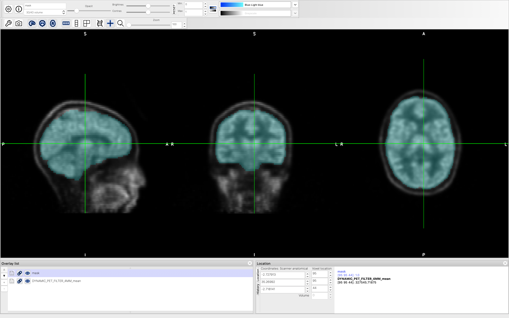

Dynamic PET Data Pre-processing¶
Introduction¶
Our dynamic PET data contains signal count at different time points, sufficient for quantifying CBF in absolute units (ml/100g/min). Before we perform quantification, we need to pre-process the data to:
1 create a registration between the T1-weighted structural and PET space
2 create an analysis mask in PET space
Registration between T1-weighted Structural and PET Space¶
We use the fslmaths command to create a mean PET signal count across all time points:
fslmaths DYNAMIC_PET_FILTER_4MM -Tmean DYNAMIC_PET_FILTER_4MM_mean
We use the bet command to extract the brain of our PET data to initiate registration:
bet DYNAMIC_PET_FILTER_4MM_mean PET_bet
We create a new directory to save the registration results:
mkdir output_pet_reg
We use the flirt command to perform registration between T1-weighted Structural and PET Space:
flirt -cost mutualinfo -in PET_bet -ref fsl_anat_dir.anat/T1_biascorr -omat output_pet_reg/pet2struct.mat -out output_pet_reg/pet2struct
The registration results are saved in output_pet_reg folder.
Create an analysis mask in PET space¶
Once we have created the registration between the PET and T1-weighted structural image, we are going to use the brain mask in the structural image space to create an analysis mask in the PET space.
First, we use the convert_xfm command to create a transformation from T1-weighted structural to PET space:
convert_xfm -omat output_pet_reg/struct2pet.mat -inverse output_pet_reg/pet2struct.mat
Now we can use transform the T1-weighted brain image to the PET space:
flirt -in fsl_anat_dir.anat/T1_biascorr_brain -ref PET_bet -applyxfm -init output_pet_reg/struct2pet.mat -out mask_pet -interp trilinear -paddingsize 1
We also slighly erode the mask the cover most of the brain regions in the PET space:
fslmaths mask_pet -bin -fillh mask_pet_reg_bin
fslmaths mask_pet_reg_bin -kernel 2D -ero -bin -fillh mask
Now we can visualize the mask on top of the PET data. The blue semitransparent layer is the mask.
